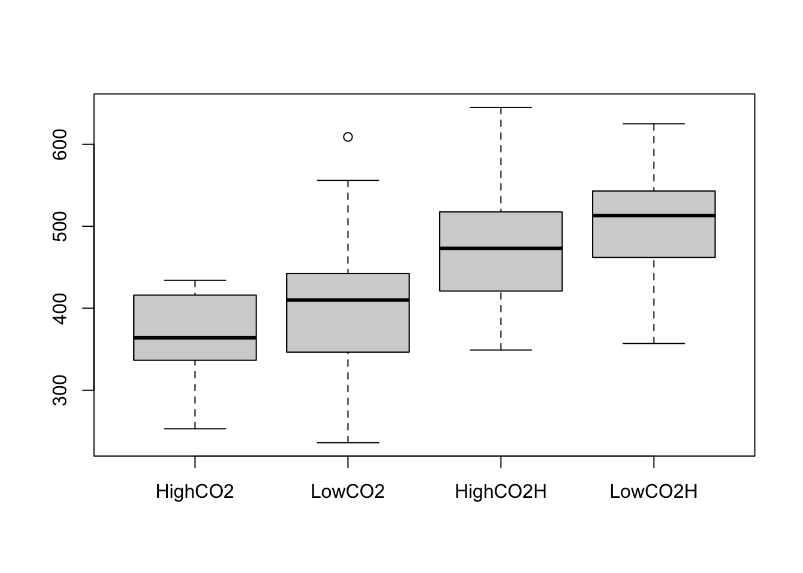
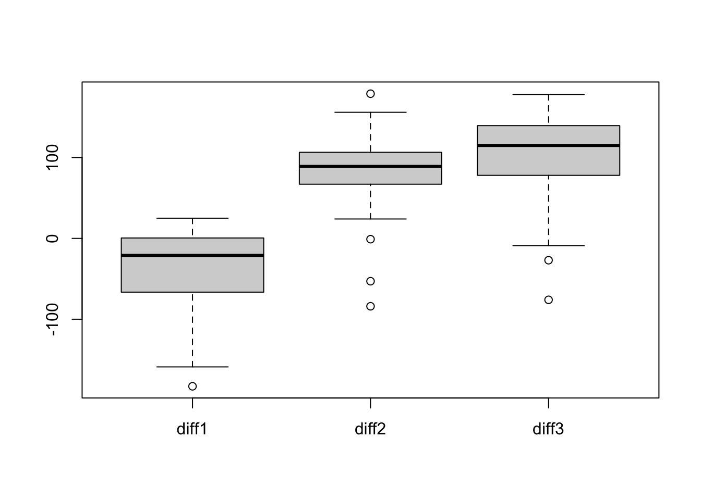

Let’s look at the famous iris dataset. We’ll focus on the setosa species and two variables: Sepal Length and Sepal Width.
A biologist might ask: “Is the mean vector of sepal measurements for setosa flowers equal to a specific standard, say \boldsymbol{\mu}_0 = [5.1, 3.6]'?”
R Code: Iris Data
library(ggplot2)library(DescTools) # For one-sample T2 testlibrary(ellipse) # For plotting confidence ellipses# Isolate the setosa data for the first two variablessetosa_data = iris[iris$Species =="setosa", 1:2]names(setosa_data) =c("Sepal.Length", "Sepal.Width")head(setosa_data)
Data Visualization: iris Data
# The hypothesized mean vectormu_0 =c(5.1, 3.6)# Plot the dataggplot(setosa_data, aes(x = Sepal.Length, y = Sepal.Width)) +geom_point(color ="purple", alpha =0.7) +geom_vline(xintercept = mu_0[1],linetype ="dashed",color ="red") +geom_hline(yintercept = mu_0[2],linetype ="dashed",color ="red") +annotate("point",x = mu_0[1],y = mu_0[2],color ="red",size =5,shape =4,stroke =1.5 ) +labs(title ="Sepal Measurements for Iris Setosa",subtitle ="Red crosshairs show the hypothesized mean vector [5.1, 3.6]",x ="Sepal Length (cm)",y ="Sepal Width (cm)" ) +theme_minimal()
4.1.1 Why Not Just Run Two t-tests?
The “naive” approach is to test each variable separately.
# Test 1: Sepal Lengtht.test(setosa_data$Sepal.Length, mu = mu_0[1])
One Sample t-test
data: setosa_data$Sepal.Length
t = -1.8857, df = 49, p-value = 0.06527
alternative hypothesis: true mean is not equal to 5.1
95 percent confidence interval:
4.905824 5.106176
sample estimates:
mean of x
5.006
R Code: One-Sample t-Test
# Test 2: Sepal Widtht.test(setosa_data$Sepal.Width, mu = mu_0[2])
One Sample t-test
data: setosa_data$Sepal.Width
t = -3.2085, df = 49, p-value = 0.002354
alternative hypothesis: true mean is not equal to 3.6
95 percent confidence interval:
3.320271 3.535729
sample estimates:
mean of x
3.428
Individually, we failed to reject the first null hypothesis and would reject the second null hypothes at \alpha = 0.05. But this is misleading!
Why do we need a multivariate test?
The univariate approach doesn’t answer the right question. The research question is about the mean vector\boldsymbol{\mu}, not the individual means. The two t-tests do not provide a single measure of evidence (one p-value) against the single hypothesis H_0: \boldsymbol{\mu} = \boldsymbol{\mu}_0.
It ignores the data’s structure. Sepal length and petal length are correlated. Taller flowers tend to have longer petals. The separate t-tests treat the variables as independent, which they are not. This ignores crucial information about the joint variability (or covariance) of the data.
It cannot quantify the joint uncertainty. The true “distance” of the sample mean vector from the hypothesized mean vector can only be properly measured by accounting for the covariance between variables. We need a method that can create a single confidence region (an ellipse) for the mean vector, which is impossible with two separate confidence intervals.
The multivariate approach provides a single, unified test for a single, unified hypothesis, while properly accounting for the relationships between the variables.
4.1.2 The Family-Wise Error Rate Problem
If we conduct p tests, each at a significance level \alpha, the probability of making at least one Type I error (a false positive) skyrockets.
\text{Pr}(\text{rejecting at least one} \, H_0: \mu_j = \mu_{0j} \, | \, \text{all}\, H_0\text{'s are true})= 1 - (1 - \alpha)^p
For our p=2 case with \alpha=0.05, the true error rate is 1 - (1-0.05)^2 = 0.0975, nearly double our intended \alpha!
This approach is very conservative (i.e., tends to reject more null hypotheses than we should).
More importantly, this univariate approach completely ignores the correlation between variables. Multivariate methods account for this correlation structure.
4.2 Review of Univariate Inference
The one-sample t-test answers a very common question: “Is the average of my sample significantly different from a known or claimed value?”
Before we go multivariate, let’s review the one-sample t-test for a mean \mu.
t-Test
Hypotheses:H_0: \mu = \mu_0H_1: \mu \neq \mu_0
Test Statistic: t = \frac{\bar{x} - \mu_0}{s/\sqrt{n}} \sim t_{n-1}
Confidence Interval: A 100(1-\alpha)\% CI for \mu is: \bar{x} \pm t_{n-1, 1-\alpha/2} \frac{s}{\sqrt{n}}
Decision approach
To make the decision, we could either use the rejection region approach or the p-value approach.
Rejection Region
If |t|> |t_{n-1,1-\alpha/2}|, we should reject H_0 at significance level \alpha; otherwise, we fail to reject H_0 at significance level \alpha and conclude there is no sufficient evidence to detect the difference.
P-Value
The p-value is the probability of seeing a result as extreme as yours (or more extreme) if the claim (in null hypothesis) were actually true.
Small p-value (typically < 0.05): This result is very unlikely to happen by random chance alone. We reject the null hypothesis (H_0) and conclude there’s a significant difference at level \alpha (e.g., 0.05).
Large p-value (typically ≥ 0.05): This result is reasonably likely to happen by random chance. The difference you saw could just be noise. We fail to reject the null hypothesis at level \alpha (e.g., 0.05). There is no sufficient evidence from the data to indicate the null hypothesis is wrong.
Example: Coffee Roaster
Let’s test the coffee roaster’s claim. We buy 10 bags and weigh them with data given by . We want to test if the true mean weight is different from the claimed 12 ounces.
Null hypothesis: H_0: ______
Alternative hypothesis H_1: ______
R Code: One-Sample t Test
# Our sample data: weights of 10 coffee bags in ouncescoffee_weights <-c(11.8, 12.1, 11.4, 11.7, 12.0, 11.6, 11.8, 12.2, 11.5, 11.8)# The hypothesized mean from the null hypothesismu0 <-12# Perform the one-sample t-testtest_result <-t.test(x = coffee_weights, mu = mu0)# Print the resultsprint(test_result)
One Sample t-test
data: coffee_weights
t = -2.5959, df = 9, p-value = 0.02893
alternative hypothesis: true mean is not equal to 12
95 percent confidence interval:
11.607 11.973
sample estimates:
mean of x
11.79
Interpreting the output:
t=-2.596: The sample mean is 2.596 standard errors below the hypothesized mean. That’s a moderately strong signal.
Conclusion: Since the p-value = 0.029 is less than the significant level \alpha=0.05, we reject the null hypothesis. We conclude that the true mean weight of the coffee bags is significantly different from 12 ounces at level \alpha=0.05.
95 percent confidence interval: [11.61, 11.97]: We are 95% confident that the true mean weight of all bags from this roaster is between 11.61 and 11.97 ounces. Notice that this interval does not contain 12, which confirms our decision to reject the null hypothesis.
4.3 Generalizing to the Multivariate Case
We upgrade our tools from scalars to vectors and matrices.
The sample mean vector\bar{\mathbf{x}} is a vector of the individual sample means. \bar{\mathbf{x}} = \begin{bmatrix} \bar{x}_1 \\ \vdots \\ \bar{x}_p \end{bmatrix}
The sample covariance matrix\mathbf{S} contains the sample variances on its diagonal and the sample covariances on its off-diagonals. \mathbf{S} = \frac{1}{n-1} \sum_{j=1}^{n} (\mathbf{x}_j - \bar{\mathbf{x}})(\mathbf{x}_j - \bar{\mathbf{x}})^\top
R Code: Sample Mean and Sample Covariance
n =nrow(setosa_data)p =ncol(setosa_data)x_bar =colMeans(setosa_data)cat("Sample Mean Vector (x_bar):", x_bar)
Sample Mean Vector (x_bar): 5.006 3.428
R Code: Sample Mean and Sample Covariance
S <-cov(setosa_data)cat("Sample Covariance Matrix (S):\n")
This is the multivariate workhorse, analogous to the squared t-statistic.
4.4.1 Hotelling’s T^2 Statistic
Hotelling’s T^2 statistic measures the “distance” between the sample mean vector \bar{\mathbf{x}} and the hypothesized mean vector \boldsymbol{\mu}_0, accounting for sample size and covariance.
We reject H_0 if our calculated F-statistic (or scaled T^2 statistic) is greater than the critical value F_{p, n-p, 1-\alpha} at significance level \alpha.
4.4.3 Assumptions
The observations \mathbf{x}_1, \dots, \mathbf{x}_n are independently drawn from the same population distribution.
The population distribution is multivariate normal (MVN): \mathbf{x}_i \overset{iid}{\sim} N_p(\boldsymbol{\mu}, {\Sigma}), i=1,\ldots, n.
4.4.4 Example: Sweat Data
A study measured sweat rate, sodium content, and potassium content for 20 healthy females. Let’s test if the mean vector is \boldsymbol{\mu}_0 = [4, 50, 10]^\top.
## Q-Q plotpar(mfrow =c(1, 3))# Loop through the first 3 column names for (col_name incolnames(sweat)[1:3]) {qqnorm(sweat[[col_name]], main = col_name)qqline(sweat[[col_name]], col ="red", lwd =2)}
Code
## Test normality for each variablesapply(colnames(sweat[ ,1:3]), function(x) {shapiro.test(sweat[[x]]) } )
Generalized Shapiro-Wilk test for Multivariate Normality by
Villasenor-Alva and Gonzalez-Estrada
data: as.matrix(sweat[, 1:3])
MVW = 0.96404, p-value = 0.7893
Step 2: Calculate Sample Statistics
Code
n =nrow(sweat)p =ncol(sweat)xbar =colMeans(sweat)S =cov(sweat)S_inv =solve(S)
Conclusion: Since our F-statistic (12.98) is much larger than the critical F-value (3.197), we reject the null hypothesis at level \alpha=0.05. The mean sweat composition is significantly different from [4, 50, 10]^\top.
Hotelling’s T^2 Test
The explicit calculations in Steps 2-3 above can be completed using R package DescTools after normality check. If the data follows a multivariate normal distribution, then we can perform the Hotelling’s T^2 test; if the normality assumption is violated, the conclusion is misleading and this limitation should be acknowledged.
R Code: Hotelling’s T2 test
# install.packages("DescTools")library(DescTools)ht_sweat <-HotellingsT2Test(x=sweat, mu = mu0_sweat)print(ht_sweat)
Hotelling's one sample T2-test
data: sweat
T.2 = 12.975, df1 = 3, df2 = 17, p-value = 0.0001177
alternative hypothesis: true location is not equal to c(4,50,10)
Note: At this point we do not know which of the two hypothesized mean values is not supported by the data.
R Function HotellingsT2Test
When the function HotellingsT2Test in the R package DescTools is used to perform the test, its output reports the scaledT^2 statistic (or F statistic) named T.2 (which is 12.975 in this example). This scaled T^2 statistic should not be confused with the T^2 statistic as the scaled T^2 statistic is \frac{n-p}{p(n-1)}T^2.
4.4.5 Exercise: Iris data
Background
Ronald Fisher’s iris dataset is a cornerstone of statistical analysis. Imagine a historical botanical guide from the 1930s describes the “type specimen” for the Iris setosa species as having a mean Sepal Length of 5.1 cm and a mean Sepal Width of 3.6 cm.
Your task is to determine if the sample of 50 Iris setosa flowers from Fisher’s dataset is consistent with this historical description. You will use a Hotelling’s T² test with a significance level of \alpha = 0.05.
1. State the Hypotheses
Write the null hypothesis (H_0) and the alternative hypothesis (H_1) for this test. Let \boldsymbol{\mu} represent the true mean vector of [Sepal.Length, Sepal.Width].
View Solution
The hypotheses are formulated as:
Null Hypothesis (H_0): The true mean sepal measurements are equal to the historical description. H_0: \boldsymbol{\mu} = \begin{bmatrix} 5.1 \\ 3.6 \end{bmatrix}
Alternative Hypothesis (H_1): The true mean sepal measurements are not equal to the historical description. H_1: \boldsymbol{\mu} \neq \begin{bmatrix} 5.1 \\ 3.6 \end{bmatrix}
2. Prepare and Visualize the Data
Load the necessary R packages. From the built-in iris dataset, create a final data frame containing only the Sepal.Length and Sepal.Width for the setosa species.
View Solution
R Code: Data Preparation
# Load the packages needed for the entire analysislibrary(dplyr)library(ggplot2)# Create the final data frame for analysissetosa_data <- iris %>%filter(Species =="setosa") %>% dplyr::select(Sepal.Length, Sepal.Width)df = setosa_datan =nrow(df)p =ncol(df)# Display the first few rows of the prepared datahead(df)
R Code: Data Preparation
pairs(df)
3. Perform the Statistical Test
Run a one-sample Hotelling’s T^2 test on your prepared data using the historical description as your hypothesized mean vector.
View Solution
R Code: Hotelling’s T-squared Test
# Define the hypothesized mean vectormu0 =c(5.1, 3.6)# Perform the testtest_result = DescTools::HotellingsT2Test(x = df, mu = mu0)# Print the resultsprint(test_result)
Hotelling's one sample T2-test
data: df
T.2 = 5.3116, df1 = 2, df2 = 48, p-value = 0.008244
alternative hypothesis: true location is not equal to c(5.1,3.6)
4. Interpret the Results
What is the p-value from your test? Based on this and \alpha = 0.05, do you reject or fail to reject the null hypothesis? State your conclusion in the context of the problem.
View Solution
The p-value is 0.008244. Since this p-value is less than our significance level of \alpha = 0.05, we should reject the null hypothesis at level 0.05.
Conclusion: There is enough statistical evidence to conclude that the mean sepal measurements of the setosa flowers in Fisher’s dataset are different from the historical description. The benchmark of 5.1 cm length and 3.6 cm width is not a plausible value for the true mean of this sample.
5. Visualize the Conclusion
Create a scatter plot of Sepal.Width v.s. Sepal.Length. On the plot, mark the sample mean, the hypothesized mean, and add the 95% confidence ellipse. Explain how it supports your conclusion.
View Solution
R Code: Visualization
# Calculate the sample mean and sample covariance x_bar =colMeans(df)S =cov(df)# Calculate points for the 95% confidence ellipsealpha =0.05Fvalue =sqrt(p * (n -1) / (n - p) *qf(1- alpha, p, n - p))confidence_ellipse <-as.data.frame(ellipse::ellipse( S,centre = x_bar,level =1-alpha,t = Fvalue /sqrt(n)))# Create the plotggplot(df, aes(x = Sepal.Length, y = Sepal.Width)) +geom_point(color ="purple",alpha =0.6,size =2.5) +geom_path(data = confidence_ellipse,aes(x = Sepal.Length, y = Sepal.Width),color ="blue",linewidth =1,inherit.aes =FALSE ) +annotate("point", x = x_bar[1], y = x_bar[2],color ="blue", size =5 ) +annotate("text",x = x_bar[1], y = x_bar[2] +0.03,label ="Sample Mean", color ="blue" ) +annotate("point",x = mu0[1], y = mu0[2],color ="red", size =5,shape =4, stroke =1.5 ) +annotate("text",x = mu0[1], y = mu0[2] -0.03,label ="Historical Description",color ="red" ) +labs(title ="Iris Setosa Sepal Measurements",subtitle ="Hotelling's T² Test vs. Historical Description",x ="Sepal Length (cm)",y ="Sepal Width (cm)" ) +theme_bw()
Comparison of the Iris setosa sample to a historical description.
Visual Interpretation: The plot confirms the test result. The red cross (the historical description) lies outside the blue 95% confidence ellipse. Since the hypothesized value is outside the confidence region of plausible values for the true mean, it visually supports our conclusion to reject the null hypothesis.
4.5 Confidence Regions for \boldsymbol{\mu}
A confidence interval for a single mean becomes a confidence region (an ellipse for p=2, an ellipsoid for p>2) for a mean vector. This confidence region is also known as joint confidence.
A 100(1-\alpha)\% confidence region for \boldsymbol{\mu} is the set of all vectors \boldsymbol \mu satisfying: n(\bar{\mathbf{x}} - \boldsymbol{\mu})^\top {S}^{-1} (\bar{\mathbf{x}} - \boldsymbol{\mu}) \le \frac{p(n-1)}{n-p} F_{p, n-p, 1-\alpha}
Confidence Region
The confidence region forms an ellipsoid. Its shape and orientation are determined by the eigenvalues and eigenvectors of the sample covariance matrix {S}.
The center of the ellipsoid is \bar{\mathbf{x}}.
The distance from the center of the ellipsoid to the edge of the ellipsoid along the i-th axis is
\pm \sqrt{\lambda_i} \sqrt{\frac{(n-1)p}{n(n-p)}F_{(p, n-p), 1-\alpha}}.
The directions of the eigenvectors and sizes of the eigenvalues depend on
the relative sizes of the variances of the measured variables
the sizes of the correlations between pairs of variables
4.5.1 Plot Confidence Ellipse (p=2) via the ellipse Package
Let’s plot the 95% confidence ellipse for our setosa variable
R Code: Plot an Ellipse
# Plot the pointsplot(df,xlab ="Sepal Length",ylab ="Sepal Width",main ="95% Confidence Ellipse for Setosa Mean",pch =19, col =alpha("purple", 0.5),xlim=c(4.3, 5.8), ylim=c(2, 4.5))# Add the sample meanpoints(x_bar[1], x_bar[2], pch =19, col ="blue", cex =1.5)# Add the hypothesized meanpoints(mu0[1], mu0[2], pch =4, col ="red", cex =1.5, lwd=2)# Add the ellipsealpha =0.05Fvalue =sqrt(p * (n -1) / (n - p) *qf(1- alpha, p, n - p) )lines(ellipse::ellipse(S, centre = x_bar, level =1-alpha, t=Fvalue/sqrt(n) ), col ="blue", lwd =2)legend("topleft",legend =c("Data", "Sample Mean", "Hypothesized Mean", "95% Confidence Ellipse"), cex=0.8,col =c("purple", "blue", "red", "blue"),pch =c(19, 19, 4, NA),lty =c(NA, NA, NA, 1),lwd =c(NA, NA, 2, 2) )
95% confidence ellipse for the true mean vector of Setosa sepal measurements. The sample mean is the blue dot, and the hypothesized mean is the red cross.
Our hypothesized mean (red cross) falls outside the 95% confidence ellipse, which is consistent with rejecting the null hypothesis in the Hotelling’s T^2 test.
4.6 Simultaneous Confidence Intervals
If we reject H_0, we want to know which variables contributed to the rejection. We need CIs that hold simultaneously for all p variables with confidence level at least 1-\alpha.
4.6.1T^2 CIs
The T^2 confidence intervals are derived from the Hotelling’s T^2 statistic. For each component \mu_i: \bar{x}_i \pm \sqrt{\frac{p(n-1)}{n-p} F_{p, n-p, 1-\alpha}} \sqrt{\frac{s_{ii}}{n}} where s_{ii} is the (i,i)-th entry of {S}.
4.6.2 Bonferroni CIs
Another way to construct individual confidence intervals for each \mu_i is to use the t-interval, but the combined set of individual t intervals result in a simulatenous confidence level that is less than than the normal level 1-\alpha.
To avoid this limitation, one can use the so-called Bonferroni confidence intervals: \bar{x}_i \pm t_{n-1, 1- \alpha/(2p)} \sqrt{\frac{s_{ii}}{n}} where p is the number of variables to be estimated.
One-At-a-Time t CI
Using the univariate approach, we can construct t-intervals for each of mean differences, and obtain the so-called one-at-a-timet intervals:
\bar{x}_i \pm t_{n-1, 1- \alpha/2} \sqrt{\frac{s_{ii}}{n}}
The one-at-a-time CI does not control the family-wise error at \alpha or the confidence level at least at the nominal level 1-\alpha. Bonferroni CI corrects the one-at-a-time CI and produces a set of CIs that jointly have the confidence level at least 1-\alpha.
4.6.3 Comparison of Confidence Region, T^2 CI and Bonferroni CI
95% joint confidence region (ellipse) with rectangles for T-squared intervals (red shaped area) and Bonferroni simultaneous intervals (purple shaped area).
4.6.4 Example: Microwave Oven Data
Manufacturers of a microwave oven are concerned about radiation emission. They measure radiation with the door closed and open from n=12 ovens. Test if the mean radiation levels are \boldsymbol{\mu}_0 = [0.15, 0.37]'.
# Generate some plausible dataset.seed(4750)oven_data <-data.frame(Closed =rnorm(12, mean =0.25, sd =0.08),Open =rnorm(12, mean =0.30, sd =0.10))dat = oven_datamu0 <-c(0.15, 0.37)
State The Hypotheses
Let \boldsymbol \mu = (\mu_1, \mu_2)^\top represents the mean radiation levels corresponding to door closed and door open conditions. The historical standard or hypothesized mean vector is \boldsymbol \mu_0. The hypotheses are
H_0: \boldsymbol \mu = \boldsymbol \mu_0 \quad \text{v.s.} \quad H_1: \boldsymbol \mu \neq \boldsymbol \mu_0
Compute Test Statistic
If we do a manual calculation, we need to compute the Hotelling’s T^2 test
R Code: T^2 Statistic
xbar =colMeans(dat)S =cov(as.matrix(dat))n =nrow(dat)p =ncol(dat)T2 = n*t(xbar-mu0)%*%solve(S)%*%(xbar-mu0)scaledT2 = (n-p)/(p*(n-1))*drop(T2)F_crit =qf(0.95, p, n-p)if(scaledT2>F_crit){cat(paste0(" scaled T2=", signif(scaledT2,3)),">", paste0("F critical value=", signif(F_crit,3)), ", thus we reject H0 at level 0.05")}else{cat(paste0(" scaled T2=", signif(scaledT2,3)),"<", paste0("F critical value=", signif(F_crit,3)), ", thus we fail to reject H0 at level 0.05")}
scaled T2=12.7 > F critical value=4.1 , thus we reject H0 at level 0.05
R Code: Use HotellingsT2Test
# First, run the T2 testT2result <-HotellingsT2Test(x=dat, mu = mu0)print(T2result)
Hotelling's one sample T2-test
data: dat
T.2 = 12.742, df1 = 2, df2 = 10, p-value = 0.001777
alternative hypothesis: true location is not equal to c(0.15,0.37)
Simultaneous T^2 CIs
R Code: Simultaneous T2 CIs
# The p-value is tiny, so we reject H0. Let's find out why.s_ii <-diag(S)# T2-based intervalsT2_multiplier <-sqrt(p * (n -1) / (n - p) * F_crit)T2_margins <- T2_multiplier *sqrt(s_ii / n)T2_intervals <-data.frame(Variable =names(oven_data),Lower = xbar - T2_margins,Upper = xbar + T2_margins)print("95% T-squared Simultaneous CIs:")
[1] "95% T-squared Simultaneous CIs:"
Variable Lower Upper
Closed Closed 0.1829773 0.2941655
Open Open 0.1688177 0.3802530
Variable Lower Upper
Closed Closed 0.1905876 0.2865551
Open Open 0.1832896 0.3657812
Conclusion: Both methods produce similar intervals. Neither the interval for “Closed” contains its hypothesized mean 0.15. The T2 CI does not contain its hypothesized mean 0.37 while the Bonferroni CI contains its hypotheized mean 0.37. Therefore, we conclude that both mean radiation levels are significantly lower than the specified standards according the the T2 CI but only the mean radiation level for “Open” oven is higher than the specified standard using Bonferroni CI. Note that the Bonferroni CIs are slightly narrower (more precise) in this example.
4.7 Inference for Linear Combinations of Means
In many scientific applications, one is interested in making statistical inference for a linear combination of the mean components (also called mean contrast) based on multivariate data. In such applications, we can test hypotheses about any linear combination of the mean components, H_0: \mathbf{c}'\boldsymbol{\mu} = c_0. One can still apply previous methods to perform the test. This is useful for testing things like “Is the average of all means equal to 5?” or “Is the difference between mean 1 and mean 2 equal to zero?”
Dogs Anesthetics Study (J. & W. 2007)
Background
A study was conducted on a sample of 19 dogs to evaluate the effect of CO2 pressure and the anesthetic halothane on heart rate. Each dog was then administered carbon dioxide CO2 at each of two pressure levels. Next, halothane (H) was added and then administration of CO2 was repeated. There was a washout period (several weeks) between the use of one anesthetic and the use of another anesthetic. The response variable is the time in milliseconds between heartbeats. The data were obtained by measuring the response under four treatment combinations: (1) high CO2 pressure, (2) low CO2 pressure, (3) high pressure + halothane, and (4) low pressure + halothane.
Design: p=4 treatments are assigned to the same experimental unit. In total, there are n= 19 experimental units.
Objective: our interest is to formally assess whether there is significant difference between the two corresponding mean responses.
Mean responses: Let \mu_j denote the mean response under treatment j, where j=1,\ldots, 4. \boldsymbol \mu = (\mu_1, \ldots, \mu_p)^\top is a vector of mean responses over all p treatments (high CO2, low CO2, high CO2 + halothane, low CO2 + halothane).
Data: Let \mathbf{x}_i=(x_{i1}, x_{i2}, \ldots, x_{ip})^\top denote the response variable for the i-th experimental unit under all the p treatments, where i=1, \ldots, n.
Research Questions
As we want to assess whether there is significant difference between the two corresponding mean responses, we are interested in testing three specific effects simultaneously:
Is there a main effect of halothane?
Is there a main effect of CO2?
Is there an interaction effect?
Step 1: Prepare and Visualize the Data
R Code: Scatterplot Matrix
X =as.matrix(dogdat[ ,2:5])GGally::ggpairs(X)
Interpretation: The smoothed histograms on the diagonal of the scatterplot matrix show unimodal distributions, but the responses to the high CO2 anesthetic appear to be skewed left and tails of the distributions appear to be truncated relative to normal distributions. The scatter plots show nearly elliptically shaped data clouds, however, with approximately straight line trends. Consequently, the pairwise correlations appear to provide a good description of the associations between the responses to the four anesthetics.
R Code: Boxplot
boxplot(X)

Interpretation: The boxplots indicate that variation in times between heartbeats across the 19 dogs appear to be about the same for all for anesthetics. The distributions are roughly symmetric for all four anesthetics, but the distribution of times between heartbeats may be skewed left when the high level of CO2 is used without halothane. The boxplots also indicate the mean times between heartbeats tend to be higher when halothane is used, regardless of the level of CO2, so halothane may slow heart rates in dogs. There does not appear to be much difference in the distributions of times between heartbeats for low and high levels of CO2 when halothane is used. There is also not much difference between the distributions of times between heartbeats for the high and low levels of CO2 when halothane is not used, although times between heartbeats tend to be lower when the high level of CO2 is used. The higher level of CO2 may speed up heart rates in dogs, but the Halothane effect appears to have a much larger than the CO2 effect.
4.7.1 Repeated Measures
A repeated measures study is a research design where the same participants are measured multiple times under different conditions or over a period of time
Key characteristics
Same participants across conditions or time points
Measurements may be taken:
Across treatments (within-subjects design) – e.g., each participant tries all drug dosages.
Over time (longitudinal design) – e.g., measuring blood pressure weekly for 8 weeks.
Correlation between measurements
Advantages
Controls for individual differences → reduces variability and increases statistical power.
Fewer participants needed compared to a between-subjects design for the same precision.
Ability to track changes within individuals over time or across conditions.
Common Examples
Before-and-After Studies: This is the classic setup. You measure a group’s cholesterol levels (before), put them on a new diet for three months, and measure their levels again (after).
Comparing Multiple Treatments: Each participant is given several different drugs (with a washout period in between), and their reaction to each drug is measured. The dog anesthetic example from our previous conversation is a perfect case of this.
Longitudinal Studies: A researcher tracks the same group of children and measures their reading ability at ages 6, 8, and 10 to see how it develops over time.
Key Challenge: Dependent Data
When the same subject is measured on p different occasions or under p different conditions, the measurements are not independent. A person’s score at time 1 is related to their score at time 2. Because of this dependency, we cannot directly apply previous methods on the data. However, we can still analyze this data by creating difference vectors and performing a one-sample Hotelling’s T^2 test on these differences.
4.7.2 Hotelling’s T^2 Test for Contrasts
Step 2: State Hypotheses
The research questions can be formulated as a hypothesis testing problem to test treatment effects simultaneously:
Halothane Effect: The overall effect of halothane, averaging across CO2 pressure levels: (\mu_3+\mu_4)/2 - (\mu_1+\mu_2)/2.
CO2 Pressure Effect: The overall effect of CO2 pressure, averaging across halothane levels: (\mu_1+\mu_3)/2 - (\mu_2+\mu_4)/2
Interaction Effect: Whether the effect of CO2 pressure depends on the presence of halothane: (\mu_1-\mu_2)-(\mu_3-\mu_4)
Null hypothesis: The no treatment effect can be written as testing H_0: C \boldsymbol \mu =\mathbf{0} for a q\times pcontrast matrixC.
q is the number of contrasts. In this example, q=3.
Alternative hypothesis: H_1: C\boldsymbol \mu\neq \mathbf{0}
Question: How to write down the contrast matrix for the null hypothesis?
Exercise: If one is interested in testing the hypothesis that all four treatments have the same mean, then \begin{equation*}
C=
\left[\begin{array}{rrrr}
-1 & 1 & 0 & 0 \\ 0 & -1 & 1 & 0 \\ 0 & 0 & -1 & 1
\end{array}\right]
\end{equation*}
Step 4: Transform the Data Using the Contrast Matrix
For each dog, apply the contrasts defined in matrix C to their four measurements. This converts the original 4 variables into 3 new contrast variables, which will be the subject of our test.
We use matrix multiplication to transform our 19 \times 4 data matrix into a 19 \times 3 matrix of contrast scores. The formula is Y = X C^\top.
Code
# Transform the original data into contrast dataY <- X %*%t(C)# Rename columns for claritycolnames(Y) <-c("Halothane_Effect", "CO2_Effect", "Interaction_Effect")head(Y)
par(mfrow=c(2,2),pch=1) for (i in1:3){qqnorm(Y[,i], main="Normal Q-Q Plot") qqline(Y[,i], col="red", lwd=2)}apply(Y,2,shapiro.test)
$Halothane_Effect
Shapiro-Wilk normality test
data: newX[, i]
W = 0.97195, p-value = 0.8146
$CO2_Effect
Shapiro-Wilk normality test
data: newX[, i]
W = 0.80247, p-value = 0.001242
$Interaction_Effect
Shapiro-Wilk normality test
data: newX[, i]
W = 0.96055, p-value = 0.5834
Code
mvShapiroTest::mvShapiro.Test(Y)
Generalized Shapiro-Wilk test for Multivariate Normality by
Villasenor-Alva and Gonzalez-Estrada
data: Y
MVW = 0.92376, p-value = 0.05625
Conclusion: The contrast data indeed approximately follow a multivariate normal distribution as indicated by the multivariate Shapiro-Wilk test even though the original data do not follow a multivariate normal distribution.
Note: In practice, if the multivariate normality assumption is violated based on the Shapiro-Wilk test, one needs to address this issue before applying the Hotelling’s T^2 test. Alternatively, one can use a nonparametric method (e.g., Friedman test).
Step 6: Hotelling’s T^2 Test
To test H_0: C\boldsymbol \mu = 0, we can again use T^2 statistic:
T^2 = n(C\bar{\mathbf{x}} - \mathbf{0})^\top (CS^{-1}C^\top)^{-1} (C\bar{\mathbf{x}} - \mathbf{0})
The null hypothesis is rejected at significance level \alpha if
T^2 \geq \frac{(n-1)(p-1)}{(n-p+1)} F_{p-1, n-p+1, 1-\alpha}
where the numerator degrees of freedom are p-1 instead of p because the null hypotheses puts only p-1 constraints on the mean responses.
Code
# Define the hypothesized mean vector (a zero vector)mu0 <-c(0, 0, 0)# Perform the one-sample test on the contrast datatest_result = DescTools::HotellingsT2Test(Y, mu=mu0)print(test_result)
Hotelling's one sample T2-test
data: Y
T.2 = 34.375, df1 = 3, df2 = 16, p-value = 3.318e-07
alternative hypothesis: true location is not equal to c(0,0,0)
Conclusion: We clearly reject the null at significance level \alpha=0.05, so the question now becomes whether there is a difference between CO2 pressure, between halothane levels or perhaps there is no main effect of treatment but there is still an interaction. This question can be answered by looking at confidence intervals.
Paired t-Test
A paired t-test is a special, simplified case of the Hotelling’s T² test on contrasts. The powerful, general framework of the F-test on contrasts simplifies to become the familiar paired t-test when you are making only one comparison between two measurements.
The Paired t-Test: A Simple Contrast
A paired t-test is designed to answer one question: “Is there a significant difference between two matched measurements (e.g., before vs. after)?”
The Data: You have two measurements for each subject, X_1 and X_2.
The Method: For each subject, you calculate a single difference score, d = X_1 - X_2. You then perform a one-sample t-test on these difference scores to see if their mean is significantly different from 0.
The null hypothesis:H_0: \mu_d = 0, which is the same as H_0: \mu_1 - \mu_2 = 0.
4.7.3 Confidence Regions for Linear Combinations of Means
A 100(1-\alpha)\% confidence region for any linear combination of population means, say C \boldsymbol{\mu}, is the set of all vectors \boldsymbol \mu satisfying:
n(C\bar{\mathbf{x}} - C\boldsymbol{\mu})^\top (CSC^\top)^{-1} (C\bar{\mathbf{x}} - C\boldsymbol{\mu}) \le \frac{(p-1)(n-1)}{n-p+1} F_{p-1, n-p+1, 1-\alpha}
4.7.4 Simultaneous CIs for Linear Combinations of Means
After performing a multivariate test, we are often interested in more complex comparisons than just single means. We might want to test a linear combination of the population means, which takes the general form:
We can construct simultaneous confidence intervals for a set of m such combinations, where the k-th combination is defined by the coefficient vector \mathbf{c}_k = [c_{k1}, c_{k2}, \dots, c_{kp}]'.
The point estimate for any linear combination \mathbf{c}_k'\boldsymbol{\mu} is given by \mathbf{c}_k'\bar{\mathbf{x}} = \sum_{j=1}^p c_{jk} \mu_j, and the estimated variance is \frac{\mathbf{c}_k'{S}\mathbf{c}_k}{n}. The margin of error is then determined by one of the following methods.
T^2 CI
This method derives its critical value from the F-distribution associated with Hotelling’s T^2 test. The confidence intervals are valid simultaneously for any and all possible linear combinations.
A 100(1-\alpha)\% simultaneous confidence intervals are given by:
The T^2 CI for the Halothane effect is shifted below zero, indicating that the mean time between heartbeats is likely to be between -53.2 and -6.84 milliseconds shorter when Halothane is used than that when Halothane is not used, averaging across the CO2 pressure levels.
The T^2 CI for the CO2 effect is far above 0, indicating that the mean time between heartbeats is likely to be between 73.4 and 136 milliseconds longer at high CO2 pressure than that at low CO2 pressure, averaging across the halothane effect.
The T^2 CI for the interaction effect contains 0, indicating
the effect of using halothane on the mean time between heartbeats is about the same for the two levels of CO2 pressure;
the effect of changing from low to high pressure of CO2 is about the same when halothane is used as when halothane is not used.
Bonferroni CI
The 100(1-\alpha)\% simultaneous Bonferroni confidence intervals are given by:
Interpretation: While specific Bonferroni CI limits are slightly different than the limits of T^2 CIs, we can notice that same conclusions will be drawn for testing the Halothane effect, the CO2 effect and the interaction effect.
4.8 Exercises
4.8.1 Exercise 1: iris Data, Cont’d
Using the iris data, answer the following questions.
For the versicolor species, test if the mean vector for Sepal.Length and Petal.Length is equal to \boldsymbol{\mu}_0 = [6.0, 4.0]'. Use \alpha=0.05. If you reject the null hypothesis, construct 95% Bonferroni simultaneous CIs to determine which variable(s) differ from the hypothesized values.
View Solution
Code
dat <- iris[iris$Species =="versicolor", c("Sepal.Length", "Petal.Length")]mu0 <-c(6.0, 4.0)ht <-HotellingsT2Test(dat, mu = mu0)print(ht)
Hotelling's one sample T2-test
data: dat
T.2 = 24.124, df1 = 2, df2 = 48, p-value = 5.602e-08
alternative hypothesis: true location is not equal to c(6,4)
Conclusion: The p-value is much less than 0.05. We reject H_0 at significance level \alpha=0.05 and conclude that the mean sepal length and the mean petal length is different from the the hypothesized values. To understand which variable would contribute to such difference, we look at the individual CIs below.
Interpretation: The CI for Sepal.Length (5.77 to 6.10) contains the hypothesized mean of 6.0. However, the CI for Petal.Length (4.11 to 4.41) does NOT contain its hypothesized mean of 4.0. Therefore, we conclude the overall mean vector is different because the mean Petal Length is significantly greater than 4.0.
For the setosa species, construct simultaneous 95% confidence intervals for two linear combinations (m=2):
Difference:\mu_{Sepal.Length} - \mu_{Sepal.Width}
Sum:\mu_{Sepal.Length} + \mu_{Sepal.Width}
View Solution
R Code: CI Calculation
library(dplyr)data <- iris %>%filter(Species =="setosa") %>%select(Sepal.Length, Sepal.Width)n <-nrow(data)p <-ncol(data)alpha <-0.05sample_mean <-colMeans(data)S <-cov(data)# Define the linear combinations (m=2)# c1 will be for the Difference, c2 for the Sumc1 <-c(1, -1)c2 <-c(1, 1)# Combine into a list for easy iterationcombinations <-list(Difference = c1, Sum = c2)m <-length(combinations)# Calculate intervals for each methodresults <-list()for (i in1:m) { c_k <- combinations[[i]] combo_name <-names(combinations)[i] point_estimate <-t(c_k) %*% sample_mean std_error <-sqrt((t(c_k) %*% S %*% c_k) / n)# T-squared Method T2_crit <-sqrt((p * (n -1) / (n - p)) *qf(1- alpha, p, n - p)) T2_margin <- T2_crit * std_error# Bonferroni Method (adjust alpha by m) Bonf_crit <-qt(1- alpha / (2* m), df = n -1) Bonf_margin <- Bonf_crit * std_error results[[i]] <-data.frame(Combination = combo_name,T2_Lower = point_estimate - T2_margin,T2_Upper = point_estimate + T2_margin,Bonf_Lower = point_estimate - Bonf_margin,Bonf_Upper = point_estimate + Bonf_margin )}# Combine and print the resultsfinal_table <-do.call(rbind, results)print(final_table)
Interpretation: As shown in the table, the Bonferroni confidence intervals for both the “Difference” and the “Sum” are narrower than their T² counterparts, offering a more precise estimate for these specific comparisons.
4.8.2 Exercise 2: Dogs Anesthetics Study, Cont’d
In the Dogs Anesthetics study, we have tested the main effects and the interaction effect with the contrast matrix to test that all the three differences (the Halothane effect, the CO2 effect, and the interaction effect) in the mean responses have mean zero. This is equivalent to testing the null hypothesis that all four anesthetics induce the same mean times between heartbeats. In fact, this problem can be formulated by comparing any possible pairs of mean differences with zero.
In Section 4.7, we have used contrasts to test the hypothesis. Please justify why the hypothesis formulated via contrast is equivalent to test if all four anesthetics treatments induce the same mean times between heartbeats.
View Solution
We will use the same notation as defined in Section 4.7: \boldsymbol{\mu}=(\mu_1, \mu_2, \mu_3, \mu_4)^\top represents the mean times between heartbeats under the four treatments: high CO2 pressure + no Halothane, low CO2 pressure + no Halothane, high CO2 pressure + Halothane, low CO2 pressure + Halothane.
From the null hypothesis in Section 4.7, we have
\begin{aligned}
\mu_3 + \mu_4 &= \mu_1 + \mu_2, \\
\mu_1 + \mu_3 &= \mu_2 + \mu_4,\\
\mu_1 - \mu_2 &=\mu_3 - \mu_4.
\end{aligned}
Thus, after some algebra, we obtain that the above is true if and only if \mu_1=\mu_2=\mu_3=\mu_4.
Moreover, this constraint gives three independent/unique differences as other differences are just linear combinations of these three independent differences.
So, the null hypothesis in Section 4.7 is also equivalent to test if all the tree independent/unique differences are zero.
Write down the null hypothesis (H_0) and the alternative hypothesis (H_1) using population means only.
View Solution
Null Hypothesis (H_0): The true mean times between heartbeats for each anesthetic is the same:
H_0: \mu_1=\mu_2=\mu_3=\mu_4
Alternative Hypothesis (H_1): At least one mean is not the same as one of the other means.
Use box plots to compare the distributions of the values for the differences in mean times between heartbeats.
View Solution
Code
dat = dogdatdat$diff1 <- dat$HighCO2-dat$LowCO2 dat$diff2 <- dat$HighCO2H-dat$LowCO2dat$diff3 <- dat$LowCO2H-dat$LowCO2head(dat)
Code
boxplot(dat[, 6:8])

Check Assumptions.
View Solution
Code
par(mfrow=c(2,2),pch=1) for (i in6:8){qqnorm(dat[,i], main="Normal Q-Q Plot") qqline(dat[,i], col="red", lwd=2)}par(c(1,1))
NULL
Code
apply(dat[,6:8],2,shapiro.test)
$diff1
Shapiro-Wilk normality test
data: newX[, i]
W = 0.8493, p-value = 0.006534
$diff2
Shapiro-Wilk normality test
data: newX[, i]
W = 0.90513, p-value = 0.06029
$diff3
Shapiro-Wilk normality test
data: newX[, i]
W = 0.8558, p-value = 0.008349
Generalized Shapiro-Wilk test for Multivariate Normality by
Villasenor-Alva and Gonzalez-Estrada
data: as.matrix(dat[, 6:8])
MVW = 0.88078, p-value = 0.001033
Because the p-value is quite small (0.001033) the Shapiro-Wilk test for multivariate normality rejects the null hypothesis that the joint distribution of the three differences is multivariate normal distribution.
The Shapiro-Wilk tests for univariate normality indicate that the distributions of the first and third sets of differences are not normal distributions. The normal Q-Q plots indicate that those distributions are skewed to the left.
Perform the Hotelling T^2 test for the null hypothesis.
Hotelling's one sample T2-test
data: dat[, 6:8]
T.2 = 34.375, df1 = 3, df2 = 16, p-value = 3.318e-07
alternative hypothesis: true location is not equal to c(0,0,0)
To examine which mean is significant, we can investigate the simultaneous 95% confidence intervals for all six possible pairs of population mean differences: \mu_1-\mu_2, \mu_1-\mu_3,\mu_1-\mu_4, \mu_2-\mu_3, \mu_2-\mu_4, \mu_3-\mu_4.
View Solution
Code
TB.conf.int <-function(X, level =0.95){ # Convert X to a matrix, if it is not a matrix already, from# vectors or data frames. X <-as.matrix(X)# Set n to the number of observations, p to the number of variables. n <-nrow(X) p <-ncol(X)# Stop if arguments are invalid.if (!is.numeric(X)) {stop("Data must be numeric") }if (n < p) {stop("Must have at least as many observations as variables") }if (!is.numeric(level) ||length(level) !=1|| level <=0|| level >=1) {stop("Confidence level must be between 0 and 1") }# Create a matrix A in which each column represents# a difference between two pairs of means np <- p * (p -1) /2 A <-matrix(c(0), ncol = np, nrow = p) nc <-0for (i in1:(p -1)) {for (j in1:(p - i)) { A[i, nc + j] <-1 A[i + j, nc + j] <--1 } nc <- nc + (p - i) }# Create a matrix that will hold the confidence intervals. CI <-matrix(NA, 2, ncol(A))rownames(CI) <-c("lower", "upper")colnames(CI) <-colnames(A) CIB <-matrix(NA, 2, ncol(A))rownames(CIB) <-c("lower", "upper")colnames(CIB) <-colnames(A)# Find F distribution quantile for T-squared confidence intervals. F <-qf(level, p, n - p)# Find t distribution percentile for Bonferroni confidence intervals alpha <- (1- level) /2/ncol(A) levelB <-1- alpha tB <-qt(levelB, n -1) t <-qt(1- (1- level) /2, n -1)# Compute the sample covariance matrix of the original variables. C <-cov(X)# Find the confidence intervals for the specified linear combinations.for (i in1:ncol(A)) { # Find the sample mean and variance of this linear combination. m <-mean(X %*% A[, i]) v <-t(A[, i]) %*% C %*% A[, i]# Find the confidence interval for this difference. CI[1, i] <- m -sqrt((p * (n -1) / n / (n - p)) * F * v) CI[2, i] <- m +sqrt((p * (n -1) / n / (n - p)) * F * v) CIB[1, i] <- m - tB *sqrt(v / n) CIB[2, i] <- m + tB *sqrt(v / n) }# Print the confidence intervals.cat(" T-squared CIs: \n\n")print(CI)cat("\n\n Bonferroni CIs: \n\n")print(CIB)}TB.conf.int(dat[, 2:5])
Both the T^2 CIs and Bonferroni CIs yields the same conclusions as whenever one interval contains zero, the other also contains zero; and whenever one interval excludes zero, the other also excludes zero.
The CIs for \mu_1-\mu_2 and \mu_3-\mu_4 contains zeros, indicating
that there is no significant difference in mean times between heartbeats for using high or low CO2 pressure regardless of whether halothane is used or not;
and that there appears to be no significant effect of high or low pressure of CO2 on mean heart rates, after controlling for the presence or absence of halothane.
All of the other confidence intervals do not contain zero indicating that mean heart rates tend to be slower (mean time between heartbeats is longer) when halothane is used than when halothane is not used, regardless of the CO2 pressure level.
Both sets of intervals provide at least 95% simultaneous coverage of the six differences in population means for difference between heartbeats, but the Bonferroni intervals are shorter than the T-squared intervals.
4.8.3 Exercise 3: Baseball Player Data
Background
A sports science journal from the 1950s established a “classic” physical standard for professional baseball players, claiming the ideal physique had a mean height of 72.5 inches and a mean weight of 209 pounds. The data is from the Lahman::People dataset.
Your task is to determine if the average physique of modern players has significantly changed from this historical benchmark using a Hotelling’s T² test with a significance level of \alpha = 0.05. In the analysis, we assume that the random vector follows a multivariate distribution and carry out the analysis, although it actually fails the multivariate Shapiro-Wilk test.
1. State the Hypotheses
Write the null hypothesis (H_0) and the alternative hypothesis (H_1) for this test using proper mathematical notation. Let \boldsymbol{\mu} represent the true mean vector of [height, weight] for modern players.
View Solution
The hypotheses are formulated as:
Null Hypothesis (H_0): The true mean vector of modern players is equal to the historical standard. H_0: \boldsymbol{\mu} = \begin{bmatrix} 72.5 \\ 209 \end{bmatrix}
Alternative Hypothesis (H_1): The true mean vector of modern players is not equal to the historical standard. H_1: \boldsymbol{\mu} \neq \begin{bmatrix} 72.5 \\ 209 \end{bmatrix}
2. Prepare the Data
Load the necessary R packages. From the Lahman::People dataset, create a final data frame that contains only the height and weight columns for players who debuted in the year 2010 or later, with any missing values removed.
View Solution
Code
library(Lahman)library(dplyr)library(ggplot2)# Create the final data frame for analysisplayer_data <- Lahman::People %>%filter(debut>2010) %>%filter(!is.na(height) &!is.na(weight)) %>% dplyr::select(height, weight)%>%mutate(across(c(height, weight), as.numeric))df = player_datan =nrow(df)p =ncol(df)head(df)
Code
GGally::ggpairs(df)
3. Check Key Assumptions
Create and examine histograms for both the height and weight distributions in your sample. Do they appear approximately normal?
View Solution
R Code: Normality Check
## Q-Q plotpar(mfrow =c(1, 3))# Loop through the column names and create a plot for eachfor (col_name incolnames(df)) {qqnorm(df[[col_name]], main = col_name)qqline(df[[col_name]], col ="red", lwd =2)}## Compute Shapiro-Wilk statistic to test normality for each variablesapply(colnames(df), function(x) {shapiro.test(df[[x]]) } )
Generalized Shapiro-Wilk test for Multivariate Normality by
Villasenor-Alva and Gonzalez-Estrada
data: as.matrix(df)
MVW = 0.99687, p-value = 1.045e-10
Interpretation: Both distributions are mound-shaped and reasonably symmetric, supporting the assumption of approximate normality.
4. Perform the Statistical Test
Run a one-sample Hotelling’s T^2 test on your prepared data using the historical standard as your hypothesized mean vector.
View Solution
R Code: Hotelling’s T^2 Test
# Define the hypothesized mean vector from the 1950s standardmu0 <-c(72.5, 209.0)# Perform the testtest_result <- DescTools::HotellingsT2Test(x = df, mu = mu0)# Print the resultsprint(test_result)
Hotelling's one sample T2-test
data: df
T.2 = 589.64, df1 = 2, df2 = 3432, p-value < 2.2e-16
alternative hypothesis: true location is not equal to c(72.5,209)
5. Interpret the Results
What is the p-value from your test? Based on this and \alpha = 0.05, do you reject or fail to reject the null hypothesis? State your conclusion in the context of the problem.
View Solution
The p-value is exceptionally small and far below the significance level of \alpha = 0.05.
Conclusion: We strongly reject the null hypothesis. There is overwhelming statistical evidence to conclude that the average physique (the mean vector of height and weight) of modern baseball players is significantly different from the historical standard of 72 inches and 190 pounds.
6. Draw Conclusions Based on Confidence Region
Check if the hypothesized mean is in the 95% confidence ellipse. Explain how it supports your conclusion.
View Solution
R Code: Visualization
# Calculate the mean of our modern player samplexbar <-colMeans(df)S =cov(df)T2 = n*t(xbar - mu0) %*%solve(S)%*%(xbar - mu0)scaledT2 = (n-p)/(p*(n-1)) * T2 # Calculate points for the 95% confidence ellipsealpha=0.05Fvalue <-qf(1- alpha, p, n - p)cat("scaled T2 statistic is",scaledT2, ", F critical value is", Fvalue)
scaled T2 statistic is 589.6427 , F critical value is 2.998349
Code
# this is the covariance of xbarSigma_ell <- S / neig <-eigen(Sigma_ell)A <- eig$vectors %*%diag(sqrt(eig$values)) *sqrt((n -1) * p / (n - p) * Fvalue)theta <-seq(0, 2* pi, length.out =400)pts <-t(matrix(xbar, nrow =2, ncol =length(theta)) +A %*%rbind(cos(theta), sin(theta)))df_ell <-as.data.frame(pts)colnames(df_ell) <-names(df)center <-data.frame(height = xbar[1], weight = xbar[2])gg <-ggplot() +geom_path(data = df_ell, aes(height, weight)) +geom_point(data = center,aes(height, weight),color ="red",size =3) +theme_minimal() +labs(x ="Height Difference", y ="Weight Difference")print(gg)
Interpretation: This result confirms the test result. The historical standard is far outside the confidence ellipse (the 95% confidence region for the true mean of modern players), confirming that modern players are, on average, both taller and heavier. At this point we do not know which one contributes to the difference, which can be answered using simultaneous confidence intervals.
Based on simultaneous CIs (T2 or Bonferroni), the results indicates that there is a significantly individual difference in height and weight at \alpha=0.05.